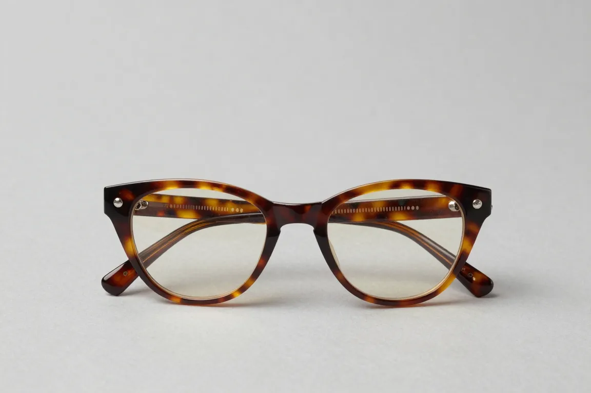

Очки и солнечные очки после 1937 года. Оправы из целлулоида и ацетата приняли формы «кошачий глаз», «браулайн» и круглую пантос рядом с тонким золочёным авиатором. Очки стали модным предметом, а не только медицинской помощью.

Главная идея
Очки — часть лица, и оправа даёт владельцу характер.
Принципы дизайна
Режьте оправу из пластика толщиной 3–5 мм с мостиком-замочной скважиной или плоским мостиком.
Поднимайте внешний угол линзы на 10–20 градусов для «кошачьего глаза».
Соединяйте тяжёлую бровную перекладину из пластика с тонким металлическим ободком для «браулайна».
Выбирайте черепаховый рисунок или сплошной цвет пластика.
Вставляйте стразы или металлические шипы в верхний угол дамской оправы.
Крепите дужки пятишарнирными петлями на стержне.
Делайте линзу шириной 48–54 мм.
Предлагайте одну оправу во многих цветах, чтобы у владельца было больше одной пары.